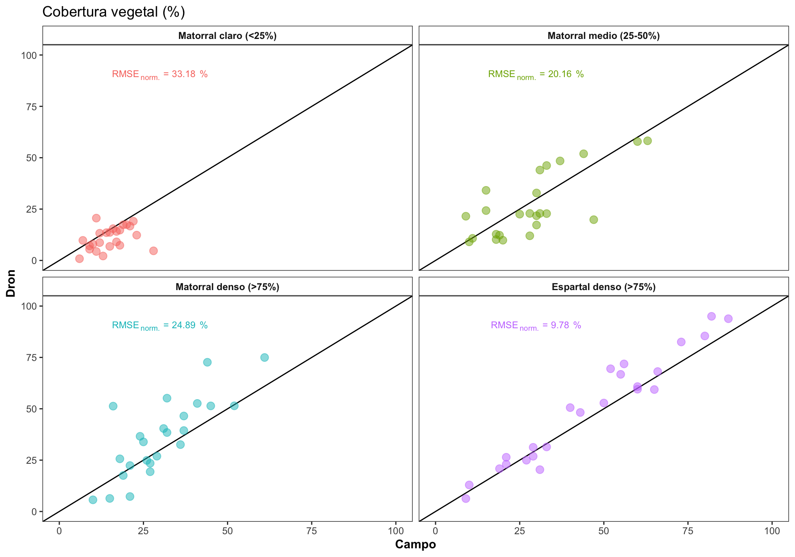

Prepare analysis and figures for VIII Spanish Forest Meeting
ajpelu
2022-01-13
Last updated: 2022-04-12
Checks: 7 0
Knit directory:
dronveg_alcontar/
This reproducible R Markdown analysis was created with workflowr (version 1.7.0). The Checks tab describes the reproducibility checks that were applied when the results were created. The Past versions tab lists the development history.
Great! Since the R Markdown file has been committed to the Git repository, you know the exact version of the code that produced these results.
Great job! The global environment was empty. Objects defined in the global environment can affect the analysis in your R Markdown file in unknown ways. For reproduciblity it’s best to always run the code in an empty environment.
The command set.seed(20210923) was run prior to running the code in the R Markdown file.
Setting a seed ensures that any results that rely on randomness, e.g.
subsampling or permutations, are reproducible.
Great job! Recording the operating system, R version, and package versions is critical for reproducibility.
Nice! There were no cached chunks for this analysis, so you can be confident that you successfully produced the results during this run.
Great job! Using relative paths to the files within your workflowr project makes it easier to run your code on other machines.
Great! You are using Git for version control. Tracking code development and connecting the code version to the results is critical for reproducibility.
The results in this page were generated with repository version 2480717. See the Past versions tab to see a history of the changes made to the R Markdown and HTML files.
Note that you need to be careful to ensure that all relevant files for the
analysis have been committed to Git prior to generating the results (you can
use wflow_publish or wflow_git_commit). workflowr only
checks the R Markdown file, but you know if there are other scripts or data
files that it depends on. Below is the status of the Git repository when the
results were generated:
Ignored files:
Ignored: .Rhistory
Ignored: .Rproj.user/
Note that any generated files, e.g. HTML, png, CSS, etc., are not included in this status report because it is ok for generated content to have uncommitted changes.
These are the previous versions of the repository in which changes were made
to the R Markdown (analysis/analysis_congreso_forestal.Rmd) and HTML (docs/analysis_congreso_forestal.html)
files. If you’ve configured a remote Git repository (see
?wflow_git_remote), click on the hyperlinks in the table below to
view the files as they were in that past version.
| File | Version | Author | Date | Message |
|---|---|---|---|---|
| Rmd | 2480717 | ajpelu | 2022-04-12 | add ctree |
| html | 8e9015e | ajpelu | 2022-04-06 | Build site. |
| Rmd | ad866b6 | ajpelu | 2022-04-06 | update plots |
| html | 27dfe15 | ajpelu | 2022-01-21 | Build site. |
| Rmd | 21f9324 | ajpelu | 2022-01-21 | change orden |
| html | cee15be | ajpelu | 2022-01-14 | Build site. |
| Rmd | 16344c1 | ajpelu | 2022-01-14 | add new plots |
| html | 8904c0a | ajpelu | 2022-01-14 | Build site. |
| Rmd | 54d711e | ajpelu | 2022-01-14 | change title |
| html | fcc3d3d | ajpelu | 2022-01-14 | Build site. |
| Rmd | 94a3c4a | ajpelu | 2022-01-14 | add analysis congreso |
| html | ed90502 | ajpelu | 2022-01-14 | Build site. |
| Rmd | a4923cc | ajpelu | 2022-01-14 | add analysis congreso |
0.1 Prepara Datos
Usamos datos de cobertura vegetal de las parcelas de campo (cob.campo) y datos derivados de dron (cob.dron).
De los datos de dron, utilizamos el método de estimación denominado COBERTURA (ver análisis preliminar)
Los datos de campo corresponden al muestreo realizado el 19/05/2021.
El vuelo del dron se realizó el día 21/05/2021.
Los rangos de cobertura se han reclasifiaco de acuerdo a:
| RANGO_INFOCA | Nombre | Cobertura |
|---|---|---|
| 1 | “Matorral claro” | “<25%” |
| 2 | “Matorral medio” | “25-50%” |
| 3 | “Espartal denso” | “>75%” |
| 4 | “Aulagar denso” | “>75%” |

0.3 Correlación por Rangos
Explorar como varía la correlación en los diferentes rangos de cobertura
Computar el RMSE, y el RMSE normalizado. El RMSE es dependiente de la escala, por lo que necesitaríamos normalizar para poder comparar entre las clases de cobertura.
| Rango de cobertura | RMSE | min | max | norm. RMSE % |
|---|---|---|---|---|
| Matorral claro (<25%) | 7.30 | 6 | 28 | 33.18 |
| Matorral medio (25-50%) | 10.89 | 9 | 63 | 20.16 |
| Matorral denso (>75%) | 12.69 | 10 | 61 | 24.89 |
| Espartal denso (>75%) | 7.63 | 9 | 87 | 9.78 |
- Generamos las ecuaciones para la gráfica

0.4 Influencia de otras variables en la Variación de la correlación
¿Existe alguna relación entre la correlación y otras variables? Podría interesarnos explorar cómo otras variables podrían influir en la correlación dron-campo, por ejemplo la riqueza o la pendiente. Se pueden utilizar varios enfoques (análisis exploratorio, residuos, etc.). En nuestro caso utilizamos la correlación entre los residuos de la correlación y las diferentes variables.
- Calculamos los residuos y los residuos absolutos
m <- lm(cob.dron ~ cob.campo, data=df)
df <- df %>% modelr::add_residuals(m) %>%
mutate(resid.abs = abs(resid))
dfres <- df %>% dplyr::select(coverclass, Diversidad = shannon, Riqueza = rich, Pendiente = slope, resid, resid.abs) %>%
pivot_longer(cols = c("Diversidad", "Riqueza", "Pendiente")) %>%
mutate(variable = fct_relevel(name, c("Diversidad", "Riqueza", "Pendiente")))- Hacemos gráfico de las tres variables
| Version | Author | Date |
|---|---|---|
| ed90502 | ajpelu | 2022-01-14 |
0.5 Comparison dronQ vs Quadrat
¿Es la relación entre dronQ-Quadrat uniforme a lo largo de todos los valores de cobertura o existen grupos dentro de esta correlación? Dicho de otro modo, ¿la correlación entre las dos variables es homogénea a lo largo de todos los valores de cobertura?
Para ello aplicamos una técnica de partición de la varianza, y hacemos árboles de clasificación.
0.5.1 Primer modelo
Model formula:
cob.dron ~ cob.campo
Fitted party:
[1] root
| [2] cob.campo <= 36
| | [3] cob.campo <= 23
| | | [4] cob.campo <= 13: 9.150 (n = 16, err = 498.4)
| | | [5] cob.campo > 13: 17.207 (n = 28, err = 2433.9)
| | [6] cob.campo > 23: 28.322 (n = 26, err = 2998.9)
| [7] cob.campo > 36
| | [8] cob.campo <= 50: 48.571 (n = 11, err = 1550.7)
| | [9] cob.campo > 50: 70.347 (n = 15, err = 2566.3)
Number of inner nodes: 4
Number of terminal nodes: 5$`1`
cob.campo
statistic 7.818806e+01
p.value 9.368296e-19
$`2`
cob.campo
statistic 2.791016e+01
p.value 1.270809e-07
$`3`
cob.campo
statistic 5.75223821
p.value 0.01646766
$`4`
NULL
$`5`
cob.campo
statistic 0.1017646
p.value 0.7497222
$`6`
cob.campo
statistic 2.83932243
p.value 0.09198299
$`7`
cob.campo
statistic 1.604824e+01
p.value 6.174895e-05
$`8`
NULL
$`9`
NULLNos indica que existen al menos 5 grupos.
pero, ¿no estaremos sobreparametrizando?
0.5.1.1 Exploprar el Overfitting (sobreparametrización)
Hacer crecer un árbol sobre cierto nivel de complejidad, puede llevarnos a sobreparametrizar el modelo. ¿En que nodo cortamos el árbol?
Es preferible tener un modelo más simple que sobreparametrizar el ajuste. Para ello podemos utilizar el Complexity parameter (CP), que controla el tamaño del árbol de decisión. Si el coste de añadir otro nodo (u otra variable) a partir del nodo actual está por encima del valor del cp, entonces el árbol no continúa creciendo. Mas información aquí
n= 96
node), split, n, deviance, yval
* denotes terminal node
1) root 96 49813.8800 30.77125
2) cob.campo< 36.5 70 9815.7370 19.49371
4) cob.campo< 23.5 44 3593.3100 14.27727
8) cob.campo< 13.5 16 498.4016 9.15000 *
9) cob.campo>=13.5 28 2433.9300 17.20714 *
5) cob.campo>=23.5 26 2998.9390 28.32154
10) cob.campo< 30.5 16 998.4559 23.88250 *
11) cob.campo>=30.5 10 1180.7530 35.42400 *
3) cob.campo>=36.5 26 7126.2780 61.13385
6) cob.campo< 51 11 1550.7140 48.57091 *
7) cob.campo>=51 15 2566.3220 70.34667 *
Regression tree:
rpart(formula = cob.dron ~ cob.campo, data = df)
Variables actually used in tree construction:
[1] cob.campo
Root node error: 49814/96 = 518.89
n= 96
CP nsplit rel error xerror xstd
1 0.659894 0 1.00000 1.02767 0.147971
2 0.064711 1 0.34011 0.39621 0.065669
3 0.060410 2 0.27540 0.38907 0.061846
4 0.016456 3 0.21499 0.29072 0.047114
5 0.013269 4 0.19853 0.28587 0.046682
6 0.010000 5 0.18526 0.26769 0.046179Al explorar este modelo observamos que el error (xerror) no se disminuye sustancialmente a partir del 3 item (nsplit = 2).
Volvemos a modelar, usando un cp = 0.07. Obtenemos, que no reducimos mucho el error.
n= 96
node), split, n, deviance, yval
* denotes terminal node
1) root 96 49813.8800 30.77125
2) cob.campo< 36.5 70 9815.7370 19.49371 *
3) cob.campo>=36.5 26 7126.2780 61.13385
6) cob.campo< 69.5 22 3288.6330 56.03091 *
7) cob.campo>=69.5 4 113.9296 89.20000 *
Regression tree:
rpart(formula = cob.dron ~ cob.campo, data = df, control = rpart.control(minsplit = 2,
cp = 0.07))
Variables actually used in tree construction:
[1] cob.campo
Root node error: 49814/96 = 518.89
n= 96
CP nsplit rel error xerror xstd
1 0.659894 0 1.00000 1.02767 0.147971
2 0.074753 1 0.34011 0.39621 0.065669
3 0.070000 2 0.26535 0.36697 0.058518Por tanto expecificamos un complexity parameter de 0.22, y comprobamos
n= 96
node), split, n, deviance, yval
* denotes terminal node
1) root 96 49813.880 30.77125
2) cob.campo< 36.5 70 9815.737 19.49371 *
3) cob.campo>=36.5 26 7126.278 61.13385 *
Regression tree:
rpart(formula = cob.dron ~ cob.campo, data = df, control = rpart.control(minsplit = 2,
cp = 0.22))
Variables actually used in tree construction:
[1] cob.campo
Root node error: 49814/96 = 518.89
n= 96
CP nsplit rel error xerror xstd
1 0.65989 0 1.00000 1.02767 0.147971
2 0.22000 1 0.34011 0.39621 0.065669
En este caso, observamos que el mejor modelo es aquel que usa dos grupos (1 split)

Y los RMSE
# A tibble: 2 x 5
clase rmse min max rmsen.minmax
<chr> <dbl> <dbl> <dbl> <dbl>
1 cob_high 11.5 37 87 23.1
2 cob_low 9.20 6 36 30.7
R version 4.0.2 (2020-06-22)
Platform: x86_64-apple-darwin17.0 (64-bit)
Running under: macOS Catalina 10.15.3
Matrix products: default
BLAS: /Library/Frameworks/R.framework/Versions/4.0/Resources/lib/libRblas.dylib
LAPACK: /Library/Frameworks/R.framework/Versions/4.0/Resources/lib/libRlapack.dylib
locale:
[1] en_US.UTF-8/en_US.UTF-8/en_US.UTF-8/C/en_US.UTF-8/en_US.UTF-8
attached base packages:
[1] stats4 grid stats graphics grDevices utils datasets
[8] methods base
other attached packages:
[1] ggparty_1.0.0 partykit_1.2-15 libcoin_1.0-7 party_1.3-9
[5] strucchange_1.5-2 sandwich_3.0-0 zoo_1.8-8 modeltools_0.2-23
[9] mvtnorm_1.1-1 rpart_4.1-15 modelr_0.1.8 ggpubr_0.4.0
[13] ggtext_0.1.1 kableExtra_1.3.1 Metrics_0.1.4 ggstatsplot_0.7.2
[17] readxl_1.3.1 here_1.0.1 forcats_0.5.1 stringr_1.4.0
[21] dplyr_1.0.6 purrr_0.3.4 readr_1.4.0 tidyr_1.1.3
[25] tibble_3.1.2 ggplot2_3.3.5 tidyverse_1.3.1 workflowr_1.7.0
loaded via a namespace (and not attached):
[1] utf8_1.1.4 tidyselect_1.1.1
[3] gmp_0.6-2 munsell_0.5.0
[5] codetools_0.2-18 ragg_1.1.1
[7] effectsize_0.4.5 miniUI_0.1.1.1
[9] withr_2.4.1 colorspace_2.0-2
[11] highr_0.8 knitr_1.31
[13] rstudioapi_0.13 ipmisc_5.0.2
[15] ggsignif_0.6.0 labeling_0.4.2
[17] emmeans_1.5.4 git2r_0.28.0
[19] farver_2.1.0 rprojroot_2.0.2
[21] coda_0.19-4 vctrs_0.3.8
[23] generics_0.1.0 TH.data_1.0-10
[25] xfun_0.23 BWStest_0.2.2
[27] markdown_1.1 R6_2.5.1
[29] BayesFactor_0.9.12-4.2 cachem_1.0.4
[31] reshape_0.8.8 assertthat_0.2.1
[33] promises_1.2.0.1 scales_1.1.1.9000
[35] multcomp_1.4-16 ggExtra_0.9
[37] gtable_0.3.0 multcompView_0.1-8
[39] processx_3.5.1 rlang_0.4.12
[41] MatrixModels_0.4-1 zeallot_0.1.0
[43] systemfonts_1.0.0 PMCMRplus_1.9.3
[45] splines_4.0.2 rstatix_0.6.0
[47] broom_0.7.9 checkmate_2.0.0
[49] yaml_2.2.1 abind_1.4-5
[51] backports_1.2.1 httpuv_1.5.5
[53] gridtext_0.1.4 inum_1.0-3
[55] tools_4.0.2 bookdown_0.21.6
[57] ellipsis_0.3.2 jquerylib_0.1.3
[59] WRS2_1.1-1 Rcpp_1.0.7
[61] plyr_1.8.6 ps_1.5.0
[63] pbapply_1.4-3 correlation_0.6.1
[65] haven_2.3.1 ggrepel_0.9.1
[67] fs_1.5.0 magrittr_2.0.1
[69] data.table_1.14.0 openxlsx_4.2.3
[71] reprex_2.0.0 whisker_0.4
[73] matrixStats_0.58.0 hms_1.0.0
[75] patchwork_1.1.1 mime_0.10
[77] evaluate_0.14 xtable_1.8-4
[79] rio_0.5.16 pairwiseComparisons_3.1.3
[81] compiler_4.0.2 crayon_1.4.1
[83] htmltools_0.5.2 mgcv_1.8-33
[85] mc2d_0.1-18 later_1.1.0.1
[87] Formula_1.2-4 lubridate_1.7.10
[89] DBI_1.1.1 SuppDists_1.1-9.5
[91] kSamples_1.2-9 dbplyr_2.1.1
[93] MASS_7.3-53 Matrix_1.3-2
[95] car_3.0-10 cli_2.5.0
[97] parallel_4.0.2 insight_0.14.4
[99] pkgconfig_2.0.3 getPass_0.2-2
[101] statsExpressions_1.1.0 coin_1.4-0
[103] foreign_0.8-81 xml2_1.3.2
[105] paletteer_1.3.0 bslib_0.2.4
[107] ggcorrplot_0.1.3 webshot_0.5.2
[109] estimability_1.3 rvest_1.0.0
[111] callr_3.7.0 digest_0.6.27
[113] parameters_0.14.0 rmarkdown_2.8
[115] cellranger_1.1.0 curl_4.3
[117] shiny_1.6.0 gtools_3.8.2
[119] lifecycle_1.0.1 nlme_3.1-152
[121] jsonlite_1.7.2 carData_3.0-4
[123] viridisLite_0.4.0 fansi_0.4.2
[125] pillar_1.6.1 lattice_0.20-41
[127] fastmap_1.1.0 httr_1.4.2
[129] survival_3.2-7 glue_1.4.2
[131] bayestestR_0.9.0 zip_2.1.1
[133] stringi_1.7.4 sass_0.3.1
[135] performance_0.8.0 rematch2_2.1.2
[137] textshaping_0.3.2 memoise_2.0.0
[139] Rmpfr_0.8-2